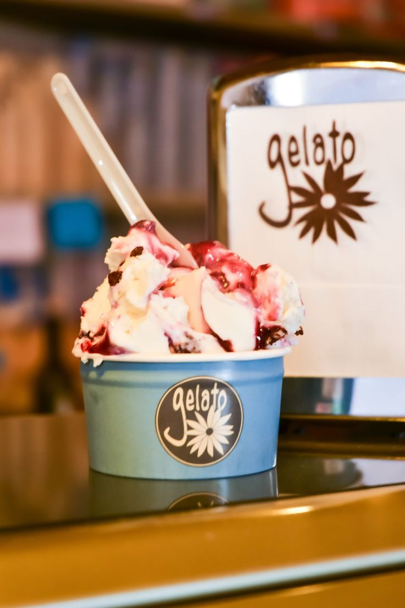
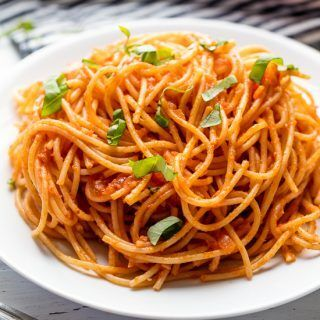
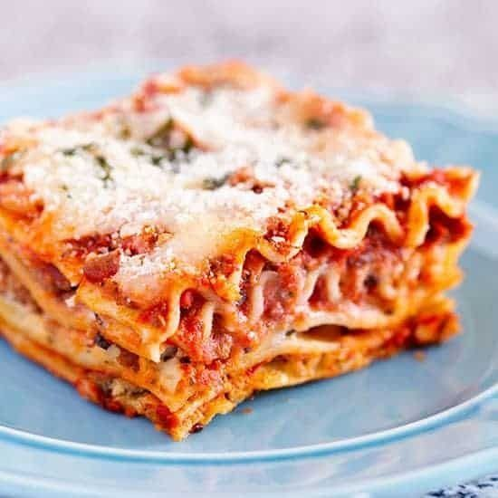

Gelato

Gelato adalah sejenis es krim ala Italia yang terkenal dengan teksturnya yang halus dan rasa yang kaya. Berbeda dengan es krim konvensional yang biasanya dibuat dengan krim susu, gelato menggunakan lebih banyak susu, sehingga menghasilkan es krim yang lebih rendah lemak. Selain itu, gelato juga menggunakan lebih sedikit udara dalam proses pembuatan, membuatnya lebih padat dan kaya rasa.
Proses pembuatan gelato dimulai dengan mencampur bahan-bahan dasar seperti susu, gula, dan pemanis alami (seperti gula atau madu) dalam panci yang dipanaskan. Campuran ini kemudian dibiarkan dingin sebelum dimasukkan ke dalam mesin pembuat gelato. Selama proses pembekuan, gelato terus diaduk secara perlahan, menciptakan tekstur yang lembut dan krimi.
Selain itu, gelato juga tersedia dalam berbagai rasa yang beragam, mulai dari rasa buah-buahan segar seperti stroberi, mangga, dan lemon, hingga rasa cokelat, kopi, dan karamel. Banyaknya pilihan rasa membuat gelato menjadi pilihan yang populer bagi para pecinta es krim di seluruh dunia.
Gelato juga sering disajikan dengan cara yang khas, yaitu dengan menggunakan spatula untuk membentuknya menjadi kerucut atau bola, dan kemudian disajikan di dalam cangkir atau kerucut khusus. Selain itu, gelato juga sering dihiasi dengan berbagai topping seperti buah segar, saus, atau kacang-kacangan untuk menambahkan rasa dan tekstur yang lebih kompleks.Dengan teksturnya yang halus, rasa yang lezat, dan beragam pilihan rasa yang tersedia, gelato merupakan hidangan penutup yang sangat disukai oleh banyak orang di seluruh dunia.
Pasta

Pasta merupakan hidangan khas Italia yang terbuat dari campuran tepung terigu, air, dan telur yang kemudian dibentuk menjadi berbagai macam bentuk seperti spaghetti, penne, fusilli, dan banyak lagi. Pasta telah menjadi makanan pokok yang sangat populer di seluruh dunia, terutama karena keanekaragaman bentuk dan sausnya yang kaya rasa.
Proses pembuatan pasta dimulai dengan mencampur tepung terigu dengan air dan telur (jika menggunakan resep yang mengandung telur). Campuran ini kemudian diuleni hingga menjadi adonan yang kohesif dan elastis. Setelah itu, adonan dipotong-potong atau dibentuk sesuai dengan bentuk pasta yang diinginkan. Proses selanjutnya adalah mengeringkan pasta dengan cara menggantungnya atau meletakkannya di rak khusus hingga benar-benar kering.
Pasta bisa dimasak dengan berbagai cara, seperti direbus dalam air garam mendidih hingga matang, digoreng, atau dipanggang. Setelah dimasak, pasta biasanya disajikan dengan berbagai macam saus seperti saus tomat, saus krim, saus pesto, atau saus daging. Beberapa hidangan pasta juga disajikan dengan tambahan bahan lain seperti sayuran, daging, seafood, atau keju.
Karena fleksibilitasnya yang besar, pasta dapat disesuaikan dengan berbagai selera dan preferensi kuliner. Selain itu, pasta juga dapat disajikan sebagai hidangan utama, sampingan, atau hidangan pembuka, membuatnya sangat serbaguna dalam konteks kuliner. Dengan teksturnya yang kenyal dan berbagai pilihan saus yang tersedia, pasta merupakan hidangan yang disukai oleh banyak orang di seluruh dunia.
Lasagna

Lasagna adalah hidangan Italia yang terkenal dengan lapisan-lapisan pasta yang dipadukan dengan saus tomat, daging, keju, dan bahan lainnya. Hidangan ini sering disebut sebagai lasagna al forno, yang berarti lasagna panggang, karena biasanya dipanggang di dalam oven sebelum disajikan. Lasagna adalah salah satu hidangan yang paling diidentikan dengan masakan Italia di seluruh dunia.
Proses pembuatan lasagna dimulai dengan memasak lembaran pasta kering atau pasta yang direbus sebentar dalam air mendidih. Setelah itu, lembaran pasta disusun secara bergantian dengan lapisan saus tomat, saus daging (biasanya daging sapi atau daging cincang), saus bechamel (susu, mentega, dan tepung terigu), serta keju parmesan atau mozzarella. Lapisan-lapisan ini kemudian diulangi beberapa kali hingga mencapai tinggi loyang.
Setelah lasagna disusun dalam loyang, hidangan tersebut kemudian dipanggang dalam oven hingga lapisan-lapisan pasta dan sausnya matang dan keju meleleh dan berwarna kecokelatan di permukaan. Lasagna yang matang kemudian diangkat dari oven, dibiarkan sebentar untuk mengendap, dan kemudian dipotong-potong dan disajikan.
Lasagna biasanya disajikan sebagai hidangan utama di berbagai acara makan besar, pesta, atau sebagai hidangan yang nyaman untuk makan malam keluarga. Hidangan ini memiliki cita rasa yang kaya dan tekstur yang lembut dari lapisan-lapisan pasta yang empuk dan berbagai saus yang menyatu dengan sempurna. Lasagna juga sering dianggap sebagai hidangan yang menghangatkan dan menghibur jiwa, sehingga menjadi favorit di banyak rumah tangga di seluruh dunia.